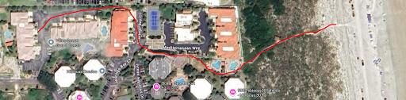
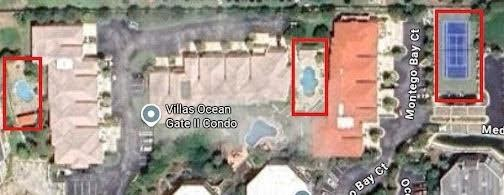
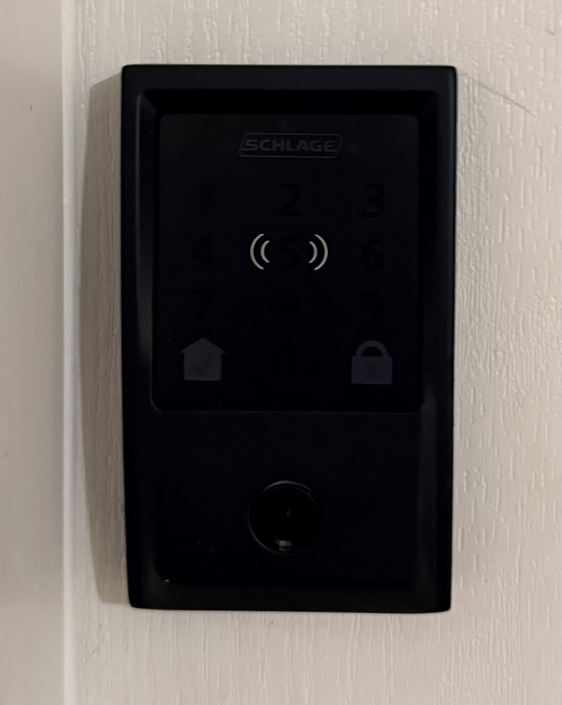
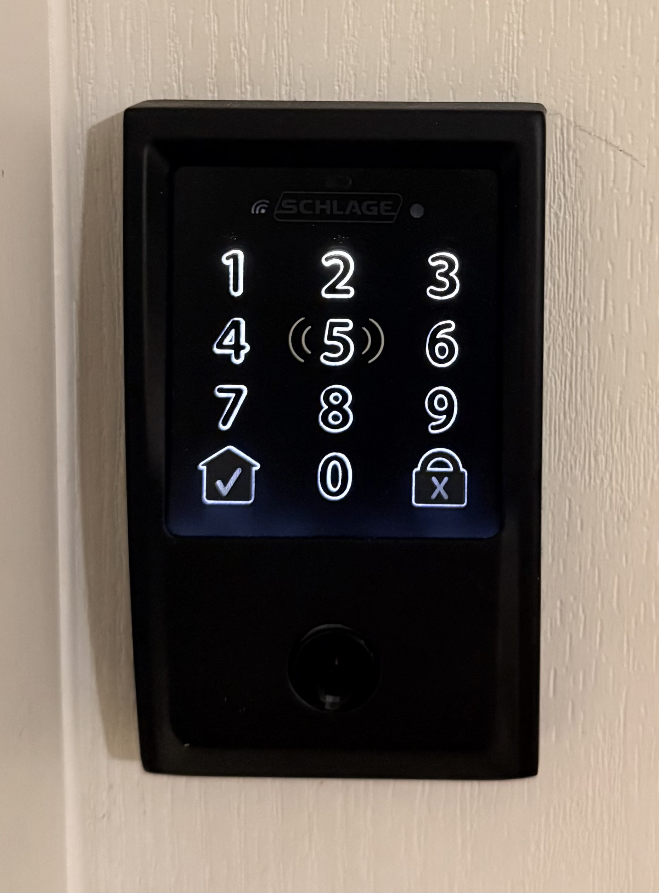
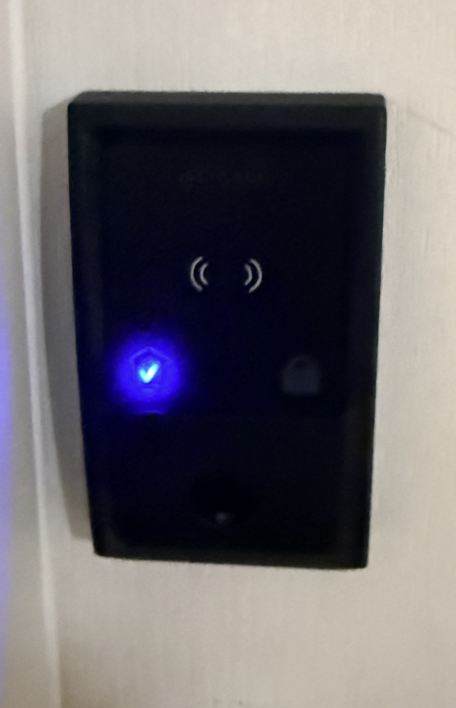
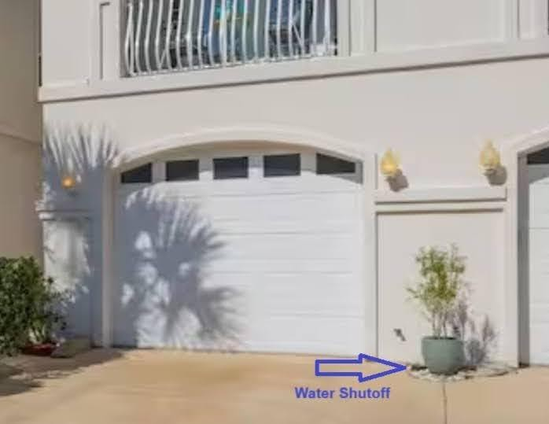

Thank you for choosing our beachside home for your stay in St. Augustine! We're thrilled to share our little slice of paradise with you. Here is your guide for a comfortable, enjoyable, stress-free stay.
Important Info
Address: 317 Royal Caribbean Court, St. Augustine, FL 32080
Max Occupancy: 8 guests
Key Features
- On the beach-side of A1A — a 6-minute walk to the beach
- Two community pools (one outside your back door)
- Fully equipped kitchen, Wi-Fi, smart TVs, washer/dryer
- Private patio with outdoor seating
- Parking: One car in the driveway and any available spots in the parking lot
- Beach Gear: Towels in the hallway basket. Beach chairs and boogie boards in the garage.
Beach Access
Follow signs to the beach. It takes about 6 minutes to walk via parking lots and path. To return from the beach, the gate code is 6499. The return path is outlined in the photo below.

Pools and Tennis Courts: You have access to two pools. One outside the back door and one on the way to the beach. The tennis court lock code is 0406. The Pools and Tennis courts are annotated in the photo below.

House Rules
To ensure a great experience for everyone, please follow these guidelines:
- No Smoking — Smoking or vaping is not allowed inside or on the patio.
- No Pets — We love furry friends, but pets are not permitted due to allergies.
- No Parties or Events — Quiet hours are from 10:00 PM to 8:00 AM to respect neighbors.
- Furniture — Please don't place suitcases on top of dressers. They are refurbished and the paint is still curing. Please don't try to open locked closets.
- Trash — Place in the dumpster at the end of the parking lot.
- Pool Rules — Open 8:00 AM to 8:00 PM. No glass containers allowed; children must be supervised.
- Beach Gear — Rinse sand off (there are hoses and showers on the walkway to the beach) and shake out towels before bringing them inside.
- Energy Conservation — Turn lights off and set AC to 75°F when leaving.
Check-In/Check-Out
Check-In (after 4:00 PM)
To unlock the front door using the Schlage keypad:
- Press the home button on the lower left of the keypad to wake it up.

- The keypad will light up — enter your provided door code.

- The keypad will confirm your code has been accepted and the door is unlocking.

Check-Out (by 11:00 AM)
- Ensure dishes are clean. It is ok to start a load of dishes in the dishwasher on your way out.
- Put used towels in the tub.
- Ensure all trash is placed in the outdoor dumpster.
- Ensure the back door is locked. Lock the front door by pressing the lock button on the lower right of the keypad.
Wi-Fi & TVs
Smart TVs with Roku devices are located in the living room upstairs and in the bunkbed room downstairs.
- Log into your Netflix, Hulu, or other apps with your own accounts.
- Sign out before leaving.
Wi-Fi Network
- Network: Guest - Casa del Temprano
- Password: letmeinplease
Kitchen & Laundry
Kitchen
- Cookware and utensils are fully stocked
- Keurig coffee maker — Some K-cups are available on the counter
- Toaster oven — To set, see this image
- Dishwasher — Detergent pods are under the sink. Just throw one in the bottom and follow this video. The door will automagically open when the cycle is complete.
- Garbage Disposal — The switch is on the wall, below the BEACH clock, next to the light dimmer switch for the kitchen bar area
Laundry
- Washer and dryer are in the front of the garage. Some starter detergent is provided.
- Please DO NOT wash sandy towels or clothes; shake them outside.
Getting Around
- Driving on the beach — If you have a 4WD vehicle, you can drive on nearly 12 miles of beach for a nominal fee. Check current conditions and beach access info.
- Parks and Playgrounds — SJC Park Facilities
- Sun UV Exposure — Butler Beach UV Predictions
- Tide Predictions — SJC Tide Predictions
Emergency Information
House Safety
- Fire Extinguishers — One under the kitchen sink; another in the garage near the door. There is also a fire blanket under the kitchen sink.
- Smoke/Carbon Monoxide Detectors — Installed in bedrooms and living areas. Contact us if they beep.
- Exterior Security Camera in the doorbell.
- Hurricane Info — If a storm approaches, follow local news (WJXT Channel 4) and our instructions via Airbnb messaging.
- Water Shutoff — As you exit the garage, it's on the ground to the left (North side — see image below). Remove the round access cover and turn the handle 90 degrees to shut it off.

Accessibility
Our Home
The 1st level has some accessibility improvements with a cement ramp from the garage to the entry hall, and no steps going out the back to the pool. Also, there is a mini refrigerator in the garage. Note that our home is a townhouse with the main bedroom, kitchen, dining room, and living room on the second level. You must navigate stairs to get to the second level.
St Augustine Accessibility
General info on where to go: https://www.visitstaugustine.com/article/accessibility-st-augustine
Crescent Beach Accessible Ramp
New July 2025 and just 3 miles away. More info | Ribbon cutting video
- Southern Boardwalk — 150-foot boardwalk with 26 stairs
- Northern Boardwalk — ADA-accessible ramp that ends in soft sand. ~30 feet of soft sand to reach hard-packed sand. Plan months in advance to get a beach wheelchair delivered.
- Drive on the beach via Cubbedge Road (4WD only)
- Three picnic tables, ADA-accessible bathrooms, four outdoor showers
- Two pavilions (each 140′ x 20′) with electric — reserve here
- Lifeguard tower from Memorial Day Weekend through Labor Day Weekend
Beach Wheel Chairs (FREE)
https://www.sjcfl.us/beach-services/beach-accessible-wheelchairs
Beach accessible wheelchairs are available at no charge for up to 7 days in a row. Reserve up to 1 year in advance. Requires a minimum 3 day notification. Reserve via Online Reservation System or contact: beaches@sjcfl.us (904) 209-0331. Wheelchairs are delivered to certain beachfront parks, and vehicular access ramps managed by St Johns County. The county secures it using a bicycle lock. The code is provided once your reservation is confirmed.
Contact Us
We're Here for You!
We hope this information helps you settle in and enjoy your stay. St. Augustine's charm, from its sandy shores to its historic streets. If you need recommendations, have questions, or run into any issues, please reach out first on Airbnb and if that doesn't work please use our cell phones. Safe travels and enjoy your beachside retreat!